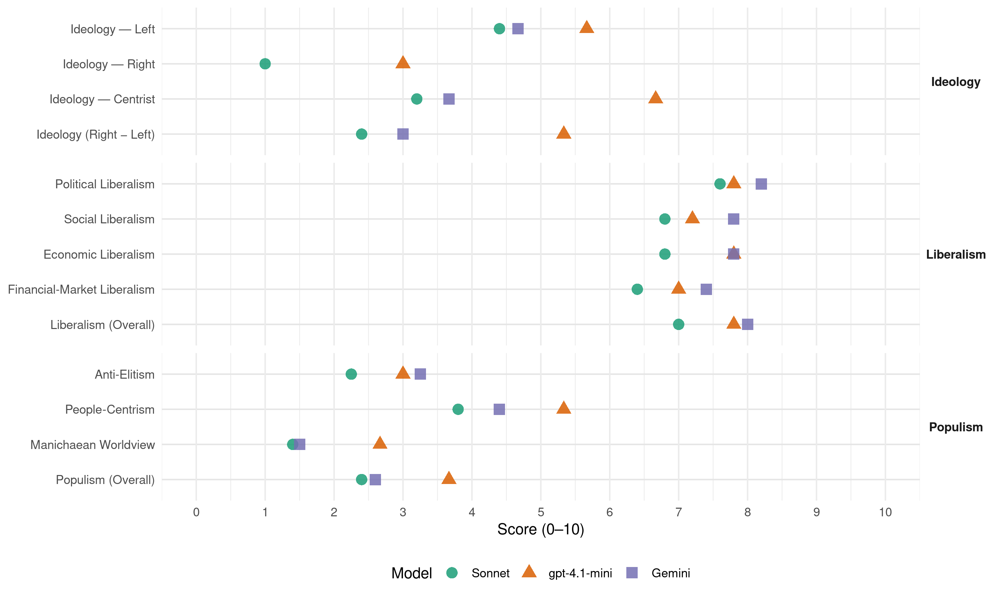

(Brazil, 1994)
manifesto_id 180310_199410
Get full text: This site shows derived annotations and short verbatim quotes only. The full manifesto text is © Manifesto Project / WZB — obtain it via manifesto-project.wzb.eu using the manifesto_id above.
Headline scores
| Dimension | Sonnet | gpt-4.1-mini | Gemini |
|---|---|---|---|
| Populism (Overall) | 2.4 | 3.7 | 2.6 |
| Anti-Elitism | 2.2 | 3.0 | 3.2 |
| People-Centrism | 3.8 | 5.3 | 4.4 |
| Manichaean Worldview | 1.4 | 2.7 | 1.5 |
| Ideology (Right − Left) | 2.4 | 5.3 | 3.0 |
| Liberalism (Overall) | 7.0 | 7.8 | 8.0 |
| Political Liberalism | 7.6 | 7.8 | 8.2 |
| Social Liberalism | 6.8 | 7.2 | 7.8 |
| Economic Liberalism | 6.8 | 7.8 | 7.8 |
| Financial-Market Liberalism | 6.4 | 7.0 | 7.4 |
Evidence per dimension
Economic Liberalism
Gemini · score 8.0 · verified · chunk 1
“abertura da economia, a desregulamentação e a privatização”
controle da inflação e do déficit público, a abertura da economia, a desregulamentação e a privatização.
Gemini · score 8.0 · verified · chunk 2
“respeitem efetivamente as regras do mercado”
reivindicar, no plano internacional, aquilo que nos propomos a praticar no país: que se respeitem efetivamente as regras do mercado, com maior liberdade
Gemini · score 7.0 · verified · chunk 3
“parceria com o setor privado”
estabelecimento de novas formas de parceria com o setor privado e de um programa reformulado de
Gemini · score 8.0 · verified · chunk 4
“flexibilização do monopólio da União sobre o petróleo”
Propor emenda à Constituição e alterações na legislação que viabilizem a flexibilização do monopólio da União sobre o petróleo, com permissão para o estabelecimento de parcerias
Gemini · score 8.0 · verified · chunk 5
“processo de liberalização da economia e”
inflação como coisa do passado. O processo de liberalização da economia e a abertura para
gpt-4.1-mini · score 7.0 · verified · chunk 1
“a estabilização da economia permite agora repensar o projeto de desenvolvimento do país”
A estabilização da economia permite agora repensar o projeto de desenvolvimento do país. O equilíbrio macroeconômico não é um fim em si mesmo, mas é um passo indispensável para recolocar a sociedade na rota do progresso econômico e social.
gpt-4.1-mini · score 8.0 · verified · chunk 2
“maior liberdade de comércio, maior concurso dos investimentos produtivos”
que se respeitem efetivamente as regras do mercado, com maior liberdade de comércio, maior concurso dos investimentos produtivos e maior acesso à ciência e à tecnologia.
gpt-4.1-mini · score 8.0 · verified · chunk 3
“simplificar nosso sistema tributário, racionalizando-o e modernizando-o para a nova etapa de desenvolvimento econômico”
…a necessidade de se resgatar a capacidade de realização de investimentos públicos, sobretudo na área social, como os princípios de simplicidade, eficácia, eqüidade e justiça social. A simplificação tributária não se refere à simples redução do número de tributos. Um único imposto pode ser mais oneroso e injusto que um conjunto racional de impostos. A simplificação requer mais que a racionalização das incidências impositivas. Os princípios da capacidade contributiva e da eqüidade fiscal, da eficiência e neutralidade econômica, também precisam ser observados…
gpt-4.1-mini · score 8.0 · verified · chunk 4
“utilizar a privatização como um dos instrumentos de política industrial”
Utilizar a privatização como um dos instrumentos de política industrial, no sentido da reestruturação e modernização do parque industrial.
gpt-4.1-mini · score 8.0 · verified · chunk 5
“a abertura para o exterior terá seguimento, não como um objetivo em si, mas como uma peça estratégica da modernização de nossa economia”
O processo de liberalização da economia e a abertura para o exterior terá seguimento, não como um objetivo em si, mas como uma peça estratégica da modernização de nossa economia. Apesar da rapidez do processo de abertura comercial do Brasil è da ausência de políticas específicas por parte do governo, para estimular a competitividade da nossa indústria e agricultura, a verdade é que o setor produtivo nacional soube resistir e se adaptar à competição externa.
Sonnet · score 7.0 · verified · chunk 1
“abertura da economia, a desregulamentação e a privatização”
compreenda o controle da inflação e do déficit público, a abertura da economia, a desregulamentação e a privatização
Sonnet · score 7.0 · verified · chunk 2
“maior liberdade de comércio, maior concurso dos investimentos”
reivindicar, no plano internacional, aquilo que nos propomos a praticar no país: que se respeitem efetivamente as regras do mercado, com maior liberdade de comércio, maior concurso dos investimentos produtivos e maior acesso à ciência e à tecnologia.
Sonnet · score 6.0 · verified · chunk 3
“participação da iniciativa privada nos empreendimentos”
mecanismos que possibilitem a participação da iniciativa privada nos empreendimentos do setor.
Sonnet · score 7.0 · verified · chunk 4
“abertura e de desregulamentação”
o mundo já estava obtendo benefícios inquestionáveis de uma etapa de abertura e de desregulamentação. Deixemos aos historiadores a tarefa de dissecar as razões
Sonnet · score 7.0 · verified · chunk 5
“liberalização da economia e a abertura para o exterior”
O processo de liberalização da economia e a abertura para o exterior terá seguimento, não como um objetivo em si, mas como uma peça estratégica da modernização
Financial-Market Liberalism
Gemini · score 8.0 · verified · chunk 1
“mobilização da poupança nacional privada para o financiamento de longo prazo”
permitirá a mobilização da poupança nacional privada para o financiamento de longo prazo. No Brasil, a previdência
Gemini · score 7.0 · verified · chunk 2
“novos mecanismos privados de financiamento, crédito”
garantir fontes estáveis de financiamento para a atividade agrícola, mais investimentos que beneficiem a população do campo e mecanismos que garantam a renda do produtor rural
Gemini · score 7.0 · verified · chunk 3
“securitizar a dívida do FCVS”
capacidade do Fundo de financiar programas habitacionais. Securitizar a dívida do FCVS junto aos agentes financeiros e ao
Gemini · score 7.0 · verified · chunk 4
“consolidação de um mercado de crédito de médio e longo prazos”
cuidaremos de que o país conte com uma adequada infra-estrutura de energia, comunicações e transporte; a estabilidade proporcionará as condições para a consolidação de um mercado de crédito de médio e longo prazos;
Gemini · score 8.0 · verified · chunk 5
“participação nos mercados financeiros nacional e”
processo de privatização; a participação nos mercados financeiros nacional e internacional, mediante a
gpt-4.1-mini · score 7.0 · verified · chunk 1
“mobilizar a poupança nacional privada para o financiamento de longo prazo”
Internamente, o mercado de capitais poderá ser impulsionado, com a reformulação do sistema privado de previdência complementar, que permitirá a mobilização da poupança nacional privada para o financiamento de longo prazo.
gpt-4.1-mini · score 7.0 · verified · chunk 4
“regras para a consolidação de um mercado de crédito de médio e longo prazos”
Garantiremos tarifas de serviços públicos estáveis; cuidaremos de que o país conte com uma adequada infra-estrutura de energia, comunicações e transporte; a estabilidade proporcionará as condições para a consolidação de um mercado de crédito de médio e longo prazos; criaremos uma agência para a promoção de investimentos.
gpt-4.1-mini · score 7.0 · verified · chunk 5
“dispomos de mais de US$ 40 bilhões em divisas que, além de assegurar lastro para o Real, permitem que se façam as importações necessárias”
Dispomos de mais de US$ 40 bilhões em divisas que, além de assegurar lastro para o Real, permitem que se façam as importações necessárias, para manter os preços baixos.
Sonnet · score 7.0 · verified · chunk 1
“liberdade nas decisões de investimento e mobilidade dos recursos”
vai manter regras claras e estáveis para o capital estrangeiro, garantindo liberdade nas decisões de investimento e mobilidade dos recursos
Sonnet · score 6.0 · verified · chunk 2
“fundos de previdência complementar”
O Governo Fernando Henrique vai explorar ainda a enorme fonte de recursos representada pelos fundos de previdência complementar. Nos países mais avançados do mundo, essas são fontes de financiamento das mais relevantes.
Sonnet · score 6.0 · verified · chunk 3
“fundos mútuos, empresas de capitalização e seguros”
Implementar novas formas de captação de recursos para o segmento imobiliário, a partir de fundos mútuos, empresas de capitalização e seguros
Sonnet · score 6.0 · verified · chunk 4
“mercado de crédito de médio e longo prazos”
a estabilidade proporcionará as condições para a consolidação de um mercado de crédito de médio e longo prazos; criaremos uma agência para a promoção de investimentos
Sonnet · score 7.0 · verified · chunk 5
“mercado de crédito de médio e longo prazos”
a estabilidade proporcionará as condições para a consolidação de um mercado de crédito de médio e longo prazos; criaremos uma agência para a promoção de investimentos
Political Liberalism
Gemini · score 8.0 · verified · chunk 1
“Queremos uma democracia consolidada”
Queremos uma democracia consolidada, em que todos os brasileiros exerçam plenamente
Gemini · score 8.0 · verified · chunk 2
“fortalecer as instituições democráticas”
de modo a fortalecer as instituições democráticas e os mecanismos de cooperação nas áreas da proteção ambiental
Gemini · score 8.0 · verified · chunk 3
“prática e aperfeiçoamento da democracia”
forças políticas empenhadas na prática e aperfeiçoamento da democracia. Desafio do qual elas não podem
Gemini · score 8.0 · verified · chunk 4
“aprofundar a democratização, acelerar o processo de descentralização”
é necessário reformar o Estado: aprofundar a democratização, acelerar o processo de descentralização e desconcentração e, sobretudo, ampliar e modificar suas formas de relacionamento
Gemini · score 9.0 · verified · chunk 5
“fortalecendo e aprimorando nossa democracia”
fronteiras da liberdade ao redemocratizar o país, fortalecendo e aprimorando nossa democracia. O Brasil ocupa
gpt-4.1-mini · score 8.0 · verified · chunk 1
“queremos uma democracia consolidada, em que todos os brasileiros exerçam plenamente sua cidadania”
Queremos uma democracia consolidada, em que todos os brasileiros exerçam plenamente sua cidadania, sem tutela do Estado sobre a sociedade , com dirigentes e partidos capazes de exercer com firmeza e probidade a vontade política de que forem investidos.
gpt-4.1-mini · score 8.0 · verified · chunk 2
“reconquista da prática democrática em nosso país”
A reconquista da prática democrática em nosso país tem contribuído para ampliar as bases sociais de apoio a essas novas formas de articulação entre o plano interno e o externo.
gpt-4.1-mini · score 8.0 · verified · chunk 3
“participação democrática da comunidade através dos conselhos nacional, estaduais e municipais”
…universalização do acesso através do Sistema Único de Saúde — SUS, o início do processo de municipalização dos serviços e a participação democrática da comunidade através dos conselhos nacional, estaduais e municipais. É preciso, também, destacar vitórias expressivas…
gpt-4.1-mini · score 7.0 · verified · chunk 4
“aprofundando e consolidando o processo de democratização”
O Governo Fernando Henrique fará da parceria Estado-Sociedade uma das suas características marcantes, aprofundando e consolidando o processo de democratização, aumentando a eficácia do gasto governamental e dando transparência às ações públicas.
gpt-4.1-mini · score 8.0 · verified · chunk 5
“expandir a igualdade e assegurar a justiça social”
Desde o famoso discurso do senador Mário Covas, quando candidato à Presidência da República, sobre o “choque de capitalismo”, o PSDB teve de confrontar-se com a grande questão de nosso tempo: como fazer funcionar a economia do país e como manter a democracia, ampliar a igualdade e assegurar a justiça social.
Sonnet · score 8.0 · verified · chunk 1
“democracia consolidada, em que todos os brasileiros exerçam plenamente sua cidadania”
Queremos uma democracia consolidada, em que todos os brasileiros exerçam plenamente sua cidadania, sem tutela do Estado sobre a sociedade
Sonnet · score 7.0 · verified · chunk 2
“valores éticos da democracia e as aspirações da cidadania”
a ação diplomática possa traduzir, não apenas interesses econômicos, mas também os valores éticos da democracia e as aspirações da cidadania.
Sonnet · score 7.0 · verified · chunk 3
“aprofundar a democratização, acelerar o processo”
é necessário reformar o Estado: aprofundar a democratização, acelerar o processo de descentralização e desconcentração
Sonnet · score 8.0 · verified · chunk 4
“aprofundar a democratização, acelerar o processo de descentralização”
é necessário reformar o Estado: aprofundar a democratização, acelerar o processo de descentralização e desconcentração e, sobretudo, ampliar e modificar suas formas
Sonnet · score 8.0 · verified · chunk 5
“aprimoramento das instituições e na busca dos consensos”
devemos perseverar no aprimoramento das instituições e na busca dos consensos possíveis entre os vários segmentos que compõem a heterogênea sociedade brasileira
Liberalism (Overall)
Gemini · score 8.0 · verified · chunk 1
“abertura da economia, a desregulamentação e a privatização”
controle da inflação e do déficit público, a abertura da economia, a desregulamentação e a privatização.
Gemini · score 8.0 · verified · chunk 2
“respeitem efetivamente as regras do mercado”
reivindicar, no plano internacional, aquilo que nos propomos a praticar no país: que se respeitem efetivamente as regras do mercado, com maior liberdade
Gemini · score 8.0 · verified · chunk 3
“prática e aperfeiçoamento da democracia”
forças políticas empenhadas na prática e aperfeiçoamento da democracia. Desafio do qual elas não podem
Gemini · score 8.0 · verified · chunk 4
“aprofundar a democratização, acelerar o processo de descentralização”
é necessário reformar o Estado: aprofundar a democratização, acelerar o processo de descentralização e desconcentração e, sobretudo, ampliar e modificar suas formas de relacionamento
Gemini · score 8.0 · verified · chunk 5
“processo de liberalização da economia e”
inflação como coisa do passado. O processo de liberalização da economia e a abertura para
gpt-4.1-mini · score 7.0 · verified · chunk 1
“A estabilização da economia permite agora repensar o projeto de desenvolvimento do país”
A estabilização da economia permite agora repensar o projeto de desenvolvimento do país. O equilíbrio macroeconômico não é um fim em si mesmo, mas é um passo indispensável para recolocar a sociedade na rota do progresso econômico e social.
gpt-4.1-mini · score 8.0 · verified · chunk 2
“reconquista da prática democrática em nosso país”
A reconquista da prática democrática em nosso país tem contribuído para ampliar as bases sociais de apoio a essas novas formas de articulação entre o plano interno e o externo.
gpt-4.1-mini · score 8.0 · verified · chunk 3
“simplificar nosso sistema tributário, racionalizando-o e modernizando-o para a nova etapa de desenvolvimento econômico”
…a necessidade de se resgatar a capacidade de realização de investimentos públicos, sobretudo na área social, como os princípios de simplicidade, eficácia, eqüidade e justiça social. A simplificação tributária não se refere à simples redução do número de tributos. Um único imposto pode ser mais oneroso e injusto que um conjunto racional de impostos. A simplificação requer mais que a racionalização das incidências impositivas. Os princípios da capacidade contributiva e da eqüidade fiscal, da eficiência e neutralidade econômica, também precisam ser observados…
gpt-4.1-mini · score 8.0 · verified · chunk 4
“aprofundando e consolidando o processo de democratização”
O Governo Fernando Henrique fará da parceria Estado-Sociedade uma das suas características marcantes, aprofundando e consolidando o processo de democratização, aumentando a eficácia do gasto governamental e dando transparência às ações públicas.
gpt-4.1-mini · score 8.0 · verified · chunk 5
“a abertura para o exterior terá seguimento, não como um objetivo em si, mas como uma peça estratégica da modernização de nossa economia”
O processo de liberalização da economia e a abertura para o exterior terá seguimento, não como um objetivo em si, mas como uma peça estratégica da modernização de nossa economia. Apesar da rapidez do processo de abertura comercial do Brasil è da ausência de políticas específicas por parte do governo, para estimular a competitividade da nossa indústria e agricultura, a verdade é que o setor produtivo nacional soube resistir e se adaptar à competição externa.
Sonnet · score 7.0 · verified · chunk 1
“abertura da economia, a desregulamentação e a privatização”
compreenda o controle da inflação e do déficit público, a abertura da economia, a desregulamentação e a privatização
Sonnet · score 7.0 · verified · chunk 2
“regras do mercado, com maior liberdade de comércio”
reivindicar, no plano internacional, aquilo que nos propomos a praticar no país: que se respeitem efetivamente as regras do mercado, com maior liberdade de comércio, maior concurso dos investimentos produtivos
Sonnet · score 6.0 · verified · chunk 3
“aprofundar a democratização, acelerar o processo”
é necessário reformar o Estado: aprofundar a democratização, acelerar o processo de descentralização e desconcentração
Sonnet · score 7.0 · verified · chunk 4
“aprofundar a democratização, acelerar o processo de descentralização”
é necessário reformar o Estado: aprofundar a democratização, acelerar o processo de descentralização e desconcentração e, sobretudo, ampliar e modificar suas formas
Sonnet · score 8.0 · verified · chunk 5
“economia de mercado já inserida, em larga medida”
baseada em uma economia de mercado já inserida, em larga medida, na economia globalizada e ainda incapaz de reduzir as desigualdades
Anti-Elitism
Gemini · score 3.0 · verified · chunk 1
“relações entre o setor privado nacional e o Estado tornaram-se clientelistas”
As relações entre o setor privado nacional e o Estado tornaram-se clientelistas; na verdade, mais: a ciranda financeira
Gemini · score 4.0 · verified · chunk 3
“intermediações clientelistas entre os níveis de governo”
descentralização tutelada, expresso por transferências negociadas através de convênios e por intermediações clientelistas entre os níveis de governo. Contudo, não basta
Gemini · score 3.0 · verified · chunk 4
“interesses corporativistas, os critérios subjetivos, os favorecimentos pessoais”
Em todas essas formas de intervenção devem ser enfrentados os interesses corporativistas, os critérios subjetivos, os favorecimentos pessoais, as pressões político-partidárias,
Gemini · score 3.0 · verified · chunk 5
“atraso, do clientelismo, do corporativismo”
Não vou compactuar com os promotores do atraso, do clientelismo, do corporativismo. Minha única bússola
gpt-4.1-mini · score 3.0 · verified · chunk 1
“dirigentes e partidos capazes de exercer com firmeza e probidade a vontade política”
queremos uma democracia consolidada, em que todos os brasileiros exerçam plenamente sua cidadania, sem tutela do Estado sobre a sociedade , com dirigentes e partidos capazes de exercer com firmeza e probidade a vontade política de que forem investidos.
gpt-4.1-mini · score 3.0 · verified · chunk 4
“indignação, quando se revelaram escândalos e roubos de proporções inimagináveis”
Violência que atinge o pobre da periferia, a criança, a mãe de família. Nos últimos anos, se já tínhamos razões de revolta por causa da miséria crescente, passamos a sentir, também, indignação, quando se revelaram escândalos e roubos de proporções inimagináveis, envolvendo dirigentes no Executivo, no Legislativo, no Judiciário e no setor privado.
gpt-4.1-mini · score 3.0 · verified · chunk 5
“não vou compactuar com os promotores do atraso, do clientelismo, do corporativismo”
Tenho sentido da realidade e sei que meu projeto incorpora o sonho brasileiro por uma vida melhor Não vou compactuar com os promotores do atraso, do clientelismo, do corporativismo. Minha única bússola será o interesse da nação, que guiará as decisões de meu governo.
Sonnet · score 2.0 · verified · chunk 1
“combate ao desperdício e à corrupção”
novos recursos serão gerados em função do combate ao desperdício e à corrupção e pela redução dos custos financeiros
Sonnet · score 2.0 · verified · chunk 2
“sem incentivos, sem uma política conseqüente do governo”
Os agricultores brasileiros têm feito verdadeiros milagres: sem incentivos, sem uma política conseqüente do governo, sem infra-estrutura adequada, apesar dos pesares, ano a ano têm aumentado a produção.
Sonnet · score 2.0 · verified · chunk 3
“clientelismo político e dos interesses particulares”
Irá também fortalecê-lo contra as pressões do clientelismo político e dos interesses particulares de grupos ou corporações.
Sonnet · score 3.0 · mixed · chunk 4
“sem o populismo inconseqüente, que vende ilusões”
Sem demagogia, sem o populismo inconseqüente, que vende ilusões a troco de votos. Depois de anos de inflação, corrupção e recessão
Sonnet · score 3.0 · verified · chunk 5
“oportunismo político”
troca a integridade intelectual pelo oportunismo político. Além dos aumentos salariais
Ideology — Centrist
Gemini · score 5.0 · verified · chunk 2
“o homem do campo não tem sido ouvido”
no Governo Fernando Henrique, o agricultor vai ter vez e vai ter voz. E preciso reconhecer que o homem do campo não tem sido ouvido em uma de suas reivindicações mais legítimas
Gemini · score 3.0 · verified · chunk 4
“parceria entre o Estado e a sociedade”
O Governo Fernando Henrique fará da parceria Estado-Sociedade uma das suas características marcantes, aprofundando e consolidando o processo de democratização
Gemini · score 3.0 · verified · chunk 5
“responder às necessidades fundamentais do povo”
diretrizes claras e viáveis, que respondem às necessidades fundamentais do povo brasileiro. Sabemos como
gpt-4.1-mini · score 6.0 · verified · chunk 1
“definir com clareza o que queremos ser como sociedade, como nação e como democracia”
Para sermos donos do nosso nariz e do nosso futuro, temos que ser capazes de definir com clareza o que queremos ser como sociedade, como nação e como democracia, e como vamos realizar o que queremos.
gpt-4.1-mini · score 7.0 · verified · chunk 4
“a inserção do Brasil no sistema produtivo internacional requer um Estado reformado”
Para atender às aspirações nacionais e populares, a inserção do Brasil no sistema produtivo internacional requer um Estado reformado, capaz de se abrir eficazmente às reivindicações e aos anseios da população, especialmente dos mais pobres, que vivem uma cidadania incompleta, mas cujas necessidades devem estar no centro das preocupações nacionais.
gpt-4.1-mini · score 7.0 · verified · chunk 5
“buscar as convergências e o entendimento, sem desconhecer a força e a legitimidade dos interesses”
Assumo este compromisso com clareza e convicção, porque ele corresponde a minha principal experiência como homem público e como político: buscar as convergências e o entendimento, sem desconhecer a força e a legitimidade dos interesses, construir consensos, negociar e governar em nome do interesse comum e não em nome desse ou daquele setor.
Sonnet · score 2.0 · verified · chunk 1
“responder aos seus anseios”
de um ângulo democrático e social, ouvindo a sociedade e procurando responder aos seus anseios
Sonnet · score 3.0 · verified · chunk 2
“parceria entre o governo federal, os governos estaduais”
Estabelecer uma política de parcerias entre o governo federal, os governos estaduais (especialmente as fundações estaduais de amparo à pesquisa) e o setor produtivo público e privado
Sonnet · score 3.0 · verified · chunk 3
“parceria Estado-Sociedade”
O Governo Fernando Henrique fará da parceria Estado-Sociedade uma das suas características marcantes
Sonnet · score 4.0 · verified · chunk 4
“articulador de consensos, um homem de ação”
Juscelino foi, essencialmente, um articulador de consensos, um homem de ação, de resultados. O governo Juscelino coincide com o aprofundamento da democracia
Sonnet · score 4.0 · verified · chunk 5
“buscar as convergências e o entendimento”
corresponde a minha principal experiência como homem público e como político: buscar as convergências e o entendimento, sem desconhecer a força e a legitimidade dos interesses
Ideology — Left
Gemini · score 4.0 · verified · chunk 1
“eliminar as brutais desigualdades sociais”
Queremos uma nação unida para trabalhar, crescer e eliminar as brutais desigualdades sociais e regionais, com cidadãos aptos
Gemini · score 5.0 · verified · chunk 3
“correção das desigualdades sociais e regionais”
indispensável para a estabilidade econômica, o desenvolvimento sustentado, a correção das desigualdades sociais e regionais. Ela irá torná- lo mais
Gemini · score 5.0 · verified · chunk 4
“desenvolvimento econômico com redistribuição de renda”
A superação da pobreza, por meio do desenvolvimento econômico com redistribuição de renda, além da universalização do ensino básico no Brasil, é pré-requisito para garantir a proteção
gpt-4.1-mini · score 5.0 · verified · chunk 1
“combata a miséria, melhore a distribuição de renda, assegure a inserção inteligente da economia brasileira”
E preciso definir e implementar um novo modelo de desenvolvimento que combata a miséria, melhore a distribuição de renda, assegure a inserção inteligente da economia brasileira no mundo e reorganize o Estado.
gpt-4.1-mini · score 6.0 · verified · chunk 4
“redistribuição de renda e geração de empregos”
As condições essenciais para erradicar a miséria e a pobreza são dadas pela retomada do desenvolvimento econômico, em novas bases, com redistribuição de renda e geração de empregos, pelo controle da inflação e pela reforma do Estado para garantir mais investimentos na área social e maior eficácia nos programas compensatórios.
gpt-4.1-mini · score 6.0 · verified · chunk 5
“Sabemos como criar um novo modelo de desenvolvimento que combata a miséria, melhore a distribuição de renda”
Seguiremos diretrizes claras e viáveis, que respondem às necessidades fundamentais do povo brasileiro. Sabemos como criar um novo modelo de desenvolvimento que combata a miséria, melhore a distribuição de renda, assegure a inserção inteligente da economia brasileira no mundo e reorganize o Estado.
Sonnet · score 4.0 · verified · chunk 1
“eliminar as brutais desigualdades sociais e regionais”
uma nação unida para trabalhar, crescer e eliminar as brutais desigualdades sociais e regionais
Sonnet · score 5.0 · verified · chunk 2
“democratização do acesso à terra”
A discussão, hoje, do tema segurança alimentar exige atenção especial para as questões relativas à democratização do acesso à terra.
Sonnet · score 4.0 · verified · chunk 3
“correção das desigualdades sociais e regionais”
A reforma do Estado é indispensável para a estabilidade econômica, o desenvolvimento sustentado, a correção das desigualdades sociais e regionais.
Sonnet · score 5.0 · verified · chunk 4
“redistribuição de renda e geração de empregos”
retomada do desenvolvimento econômico, em novas bases, com redistribuição de renda e geração de empregos, pelo controle da inflação
Sonnet · score 4.0 · verified · chunk 5
“combate a miséria, melhore a distribuição de renda”
um novo modelo de desenvolvimento que combata a miséria, melhore a distribuição de renda, assegure a inserção inteligente da economia brasileira
Ideology (Right − Left)
Gemini · score 3.0 · verified · chunk 1
“eliminar as brutais desigualdades sociais”
Queremos uma nação unida para trabalhar, crescer e eliminar as brutais desigualdades sociais e regionais, com cidadãos aptos
Gemini · score 3.0 · verified · chunk 2
“o homem do campo não tem sido ouvido”
no Governo Fernando Henrique, o agricultor vai ter vez e vai ter voz. E preciso reconhecer que o homem do campo não tem sido ouvido em uma de suas reivindicações mais legítimas
Gemini · score 4.0 · verified · chunk 3
“correção das desigualdades sociais e regionais”
indispensável para a estabilidade econômica, o desenvolvimento sustentado, a correção das desigualdades sociais e regionais. Ela irá torná- lo mais
Gemini · score 2.0 · verified · chunk 4
“sem o populismo inconseqüente, que vende ilusões”
A democracia cumpre a sua vocação, quando os interesses se convertem em idéias e passam a disputar os corações e as mentes dos eleitores. Sem demagogia, sem o populismo inconseqüente, que vende illusions a troco de votos.
Gemini · score 3.0 · verified · chunk 5
“responder às necessidades fundamentais do povo”
diretrizes claras e viáveis, que respondem às necessidades fundamentais do povo brasileiro. Sabemos como
gpt-4.1-mini · score 5.0 · verified · chunk 1
“combata a miséria, melhore a distribuição de renda, assegure a inserção inteligente da economia brasileira”
E preciso definir e implementar um novo modelo de desenvolvimento que combata a miséria, melhore a distribuição de renda, assegure a inserção inteligente da economia brasileira no mundo e reorganize o Estado.
gpt-4.1-mini · score 6.0 · verified · chunk 4
“redistribuição de renda e geração de empregos”
As condições essenciais para erradicar a miséria e a pobreza são dadas pela retomada do desenvolvimento econômico, em novas bases, com redistribuição de renda e geração de empregos, pelo controle da inflação e pela reforma do Estado para garantir mais investimentos na área social e maior eficácia nos programas compensatórios.
gpt-4.1-mini · score 5.0 · verified · chunk 5
“a aliança capaz de viabilizar o salto necessário passará pelo apoio dos setores sensíveis à necessidade de reestruturação e de fortalecimento do Estado”
Ao invés de caminhar na direção suposta por meus críticos “de esquerda” (ou de imaginação curta?), a aliança capaz de viabilizar o salto necessário passará pelo apoio dos setores sensíveis à necessidade de reestruturação e de fortalecimento do Estado na direção apontada, tanto no meio empresarial como no meio sindical e profissional e pelo realinhamento dos setores produtivos, nacionais e multinacionais para, sob liderança política clara, enfrentar os novos tempos implementado com urgência as reformas de estrutura capazes de dar à população mais empregos, melhor educação, saúde, habitação e alimentação.
Sonnet · score 2.0 · verified · chunk 1
“eliminar as brutais desigualdades sociais e regionais”
uma nação unida para trabalhar, crescer e eliminar as brutais desigualdades sociais e regionais
Sonnet · score 2.0 · verified · chunk 2
“democratização do acesso à terra”
A discussão, hoje, do tema segurança alimentar exige atenção especial para as questões relativas à democratização do acesso à terra.
Sonnet · score 2.0 · verified · chunk 3
“correção das desigualdades sociais e regionais”
A reforma do Estado é indispensável para a estabilidade econômica, o desenvolvimento sustentado, a correção das desigualdades sociais e regionais.
Sonnet · score 3.0 · verified · chunk 4
“redistribuição de renda e geração de empregos”
retomada do desenvolvimento econômico, em novas bases, com redistribuição de renda e geração de empregos, pelo controle da inflação
Sonnet · score 3.0 · verified · chunk 5
“não defenda o livre mercado”
daí não decorre que eu defenda o livre mercado, que desconsidere a necessidade do fortalecimento do Estado
Ideology — Right
gpt-4.1-mini · score 4.0 · verified · chunk 1
“queremos uma nação soberana, com fronteiras seguras e uma política externa competente”
E queremos uma nação soberana, com fronteiras seguras e uma política externa competente para defender os interesses do Brasil em benefício de seu povo.
gpt-4.1-mini · score 2.0 · verified · chunk 5
“a aliança conservadora seria ineficaz até mesmo para servir de contraponto aos interesses do capitalismo internacional”
É, portanto, no mínimo uma subestimação de minha capacidade analítica e de minha imaginação (para não falar de meus valores) pensar que, diante da “realidade contemporânea”, eu optei (e levei o PSDB a optar) por uma aliança conservadora. Sobre ser conservadora, esta aliança seria ineficaz até mesmo para servir de contraponto aos interesses do capitalismo internacional.
Sonnet · score 1.0 · verified · chunk 1
“nação soberana, com fronteiras seguras”
E queremos uma nação soberana, com fronteiras seguras e uma política externa competente
Sonnet · score 1.0 · verified · chunk 2
“defesa de interesses nacionais”
o reconhecimento desse novo estado de coisas não pode implicar renúncia à defesa de interesses nacionais ou a princípios consagrados do direito internacional.
Sonnet · score 1.0 · verified · chunk 5
“sem temores pueris em relação ao capital estrangeiro”
com nossa economia estabilizada e inserida no circuito financeiro internacional, sem temores pueris em relação ao capital estrangeiro, vamos atrair uma massa considerável
Manichaean Worldview
Gemini · score 1.0 · verified · chunk 4
“sem o populismo inconseqüente, que vende ilusões”
A democracia cumpre a sua vocação, quando os interesses se convertem em idéias e passam a disputar os corações e as mentes dos eleitores. Sem demagogia, sem o populismo inconseqüente, que vende ilusões a troco de votos.
Gemini · score 2.0 · verified · chunk 5
“troca a integridade intelectual pelo oportunismo”
de saber o que diz, troca a integridade intelectual pelo oportunismo político. Além dos aumentos
gpt-4.1-mini · score 2.0 · verified · chunk 1
“a inflação descontrolada, que só agora também conseguimos conter, distorceu quaisquer previsibilidade”
A inflação descontrolada, que só agora também conseguimos conter, distorceu quaisquer previsibilidade indispensável ao cálculo empresarial de médio e longo prazos, levando-o a tornar-se meramente especulativo.
gpt-4.1-mini · score 4.0 · verified · chunk 4
“indignação, quando se revelaram escândalos e roubos de proporções inimagináveis”
Violência que atinge o pobre da periferia, a criança, a mãe de família. Nos últimos anos, se já tínhamos razões de revolta por causa da miséria crescente, passamos a sentir, também, indignação, quando se revelaram escândalos e roubos de proporções inimagináveis, envolvendo dirigentes no Executivo, no Legislativo, no Judiciário e no setor privado.
gpt-4.1-mini · score 2.0 · verified · chunk 5
“Não se mudam as coisas com ódio, com vingança, com raiva, com desrespeito às leis”
Aprendi que a tolerância é a força maior. Numa sociedade democrática, não se mudam as coisas com ódio, com vingança, com raiva, com desrespeito às leis. Jamais coloquei os meus interesses pessoais, minha simpatias e antipatias, à frente dos interesses maiores da nação.
Sonnet · score 1.0 · verified · chunk 1
“silenciou as vozes mais lúcidas de advertência”
a resposta para isso, sob o regime autoritário, que silenciou as vozes mais lúcidas de advertência, foi a de empreender uma fuga para frente
Sonnet · score 1.0 · verified · chunk 2
“É inadmissível e eticamente inaceitável que um país”
É inadmissível e eticamente inaceitável que um país consolide práticas que levem ao desperdício de mais de 30% da produção agrícola, enquanto milhões de pessoas vivem em condições sub-humanas.
Sonnet · score 1.0 · verified · chunk 3
“Estado esclerosado e clientelista”
O Estado brasileiro, hoje esclerosado e clientelista, precisa se tornar ágil e eficiente.
Sonnet · score 2.0 · verified · chunk 4
“alguns — poucos e poderosos — ganhavam com a especulação”
a inflação persistia porque, certamente, alguns — poucos e poderosos —ganhavam com a especulação, com a ciranda financeira
Sonnet · score 2.0 · verified · chunk 5
“promotores do atraso, do clientelismo”
Não vou compactuar com os promotores do atraso, do clientelismo, do corporativismo. Minha única bússola será o interesse da nação
People-Centrism
Gemini · score 4.0 · verified · chunk 1
“responder aos seus anseios”
ouvindo a sociedade e procurando responder aos seus anseios. Agradeço às centenas de profissionais
Gemini · score 5.0 · verified · chunk 2
“o homem do campo não tem sido ouvido”
no Governo Fernando Henrique, o agricultor vai ter vez e vai ter voz. E preciso reconhecer que o homem do campo não tem sido ouvido em uma de suas reivindicações mais legítimas
Gemini · score 5.0 · verified · chunk 3
“atender e observar as prioridades sociais”
menor quota de sacrifício possível, sem, contudo, deixar de atender e observar as prioridades sociais. A simplificação tributária não se
Gemini · score 4.0 · verified · chunk 4
“servir ao bem-estar do povo”
representar o interesse público, de coordenar e dirigir o esforço nacional e de oferecer com eficiência os serviços públicos indispensáveis ao bem-estar do povo.
Gemini · score 4.0 · verified · chunk 5
“responder às necessidades fundamentais do povo”
diretrizes claras e viáveis, que respondem às necessidades fundamentais do povo brasileiro. Sabemos como
gpt-4.1-mini · score 4.0 · verified · chunk 1
“queremos uma sociedade solidária e mais justa, livre das inseguranças econômicas e sociais”
Queremos uma sociedade solidária e mais justa, livre das inseguranças econômicas e sociais que a têm infelicitado. Queremos uma nação unida para trabalhar, crescer e eliminar as brutais desigualdades sociais e regionais, com cidadãos aptos a resolver seus próprios problemas e ajudar a resolver os do país.
gpt-4.1-mini · score 6.0 · verified · chunk 4
“o povo brasileiro foi tão criativo nas artes, na música, no cinema”
O governo Juscelino coincide com o aprofundamento da democracia; a própria dinâmica nova do desenvolvimento transformou a sociedade, trazendo à cena atores, como os sindicatos modernos. Em poucos momentos de sua história, o povo brasileiro foi tão criativo nas artes, na música, no cinema, na literatura, como no período inaugurado por Juscelino Kubitschek.
gpt-4.1-mini · score 6.0 · verified · chunk 5
“Sabemos como criar um novo modelo de desenvolvimento que combata a miséria, melhore a distribuição de renda, assegure a inserção inteligente da economia brasileira no mundo”
Minha candidatura à Presidência da República nasceu da confiança depositada em mim por meus companheiros de coligação, para que eu conduza o projeto necessário de transformação da sociedade brasileira. Seguiremos diretrizes claras e viáveis, que respondem às necessidades fundamentais do povo brasileiro. Sabemos como criar um novo modelo de desenvolvimento que combata a miséria, melhore a distribuição de renda, assegure a inserção inteligente da economia brasileira no mundo e reorganize o Estado.
Sonnet · score 4.0 · verified · chunk 1
“direito à vida com dignidade seja garantido”
um modelo de justiça social onde o direito à vida com dignidade seja garantido
Sonnet · score 3.0 · verified · chunk 2
“resgatar a cidadania para todos os homens do campo”
quanto os produtores e trabalhadores rurais marginalizados, que, além daqueles instrumentos, requerem amplo programa de formação de mão-de-obra e extensão rural, a fim de resgatar a cidadania para todos os homens do campo.
Sonnet · score 3.0 · verified · chunk 3
“segurança é um direito fundamental do cidadão”
levando em conta que a segurança é um direito fundamental do cidadão. No Governo Fernando Henrique, serão desenvolvidas
Sonnet · score 4.0 · verified · chunk 4
“anseios da população, especialmente dos mais pobres”
se abrir eficazmente às reivindicações e aos anseios da população, especialmente dos mais pobres, que vivem uma cidadania incompleta
Sonnet · score 5.0 · verified · chunk 5
“É preciso colocar o povo em primeiro lugar”
objetivo central proporcionar ao cidadão os bons serviços públicos a que ele tem direito. É preciso colocar o povo em primeiro lugar. Quero que muitas das medidas
Populism (Overall)
Gemini · score 2.0 · verified · chunk 1
“responder aos seus anseios”
ouvindo a sociedade e procurando responder aos seus anseios. Agradeço às centenas de profissionais
Gemini · score 3.0 · verified · chunk 2
“o homem do campo não tem sido ouvido”
no Governo Fernando Henrique, o agricultor vai ter vez e vai ter voz. E preciso reconhecer que o homem do campo não tem sido ouvido em uma de suas reivindicações mais legítimas
Gemini · score 3.0 · verified · chunk 3
“intermediações clientelistas entre os níveis de governo”
descentralização tutelada, expresso por transferências negociadas através de convênios e por intermediações clientelistas entre os níveis de governo. Contudo, não basta
Gemini · score 2.0 · verified · chunk 4
“sem o populismo inconseqüente, que vende ilusões”
A democracia cumpre a sua vocação, quando os interesses se convertem em idéias e passam a disputar os corações e as mentes dos eleitores. Sem demagogia, sem o populismo inconseqüente, que vende ilusões a troco de votos.
Gemini · score 3.0 · verified · chunk 5
“atraso, do clientelismo, do corporativismo”
Não vou compactuar com os promotores do atraso, do clientelismo, do corporativismo. Minha única bússola
gpt-4.1-mini · score 3.0 · verified · chunk 1
“dirigentes e partidos capazes de exercer com firmeza e probidade a vontade política”
queremos uma democracia consolidada, em que todos os brasileiros exerçam plenamente sua cidadania, sem tutela do Estado sobre a sociedade , com dirigentes e partidos capazes de exercer com firmeza e probidade a vontade política de que forem investidos.
gpt-4.1-mini · score 4.0 · verified · chunk 4
“indignação, quando se revelaram escândalos e roubos de proporções inimagináveis”
Violência que atinge o pobre da periferia, a criança, a mãe de família. Nos últimos anos, se já tínhamos razões de revolta por causa da miséria crescente, passamos a sentir, também, indignação, quando se revelaram escândalos e roubos de proporções inimagináveis, envolvendo dirigentes no Executivo, no Legislativo, no Judiciário e no setor privado.
gpt-4.1-mini · score 4.0 · verified · chunk 5
“não vou compactuar com os promotores do atraso, do clientelismo, do corporativismo”
Tenho sentido da realidade e sei que meu projeto incorpora o sonho brasileiro por uma vida melhor Não vou compactuar com os promotores do atraso, do clientelismo, do corporativismo. Minha única bússola será o interesse da nação, que guiará as decisões de meu governo.
Sonnet · score 2.0 · verified · chunk 1
“combate ao desperdício e à corrupção”
novos recursos serão gerados em função do combate ao desperdício e à corrupção e pela redução dos custos financeiros
Sonnet · score 2.0 · verified · chunk 2
“resgatar a cidadania para todos os homens do campo”
quanto os produtores e trabalhadores rurais marginalizados, que, além daqueles instrumentos, requerem amplo programa de formação de mão-de-obra e extensão rural, a fim de resgatar a cidadania para todos os homens do campo.
Sonnet · score 2.0 · verified · chunk 3
“clientelismo político e dos interesses particulares”
Irá também fortalecê-lo contra as pressões do clientelismo político e dos interesses particulares de grupos ou corporações.
Sonnet · score 3.0 · verified · chunk 4
“sem o populismo inconseqüente, que vende ilusões”
Sem demagogia, sem o populismo inconseqüente, que vende ilusões a troco de votos. Depois de anos de inflação, corrupção e recessão
Sonnet · score 3.0 · verified · chunk 5
“É preciso colocar o povo em primeiro lugar”
objetivo central proporcionar ao cidadão os bons serviços públicos a que ele tem direito. É preciso colocar o povo em primeiro lugar.
Social Liberalism